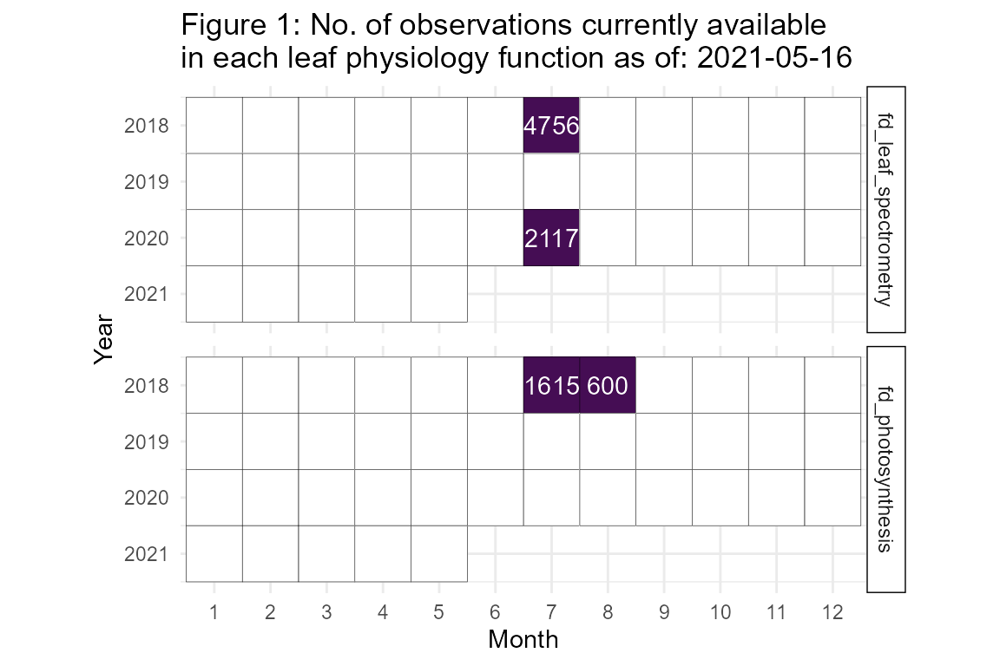
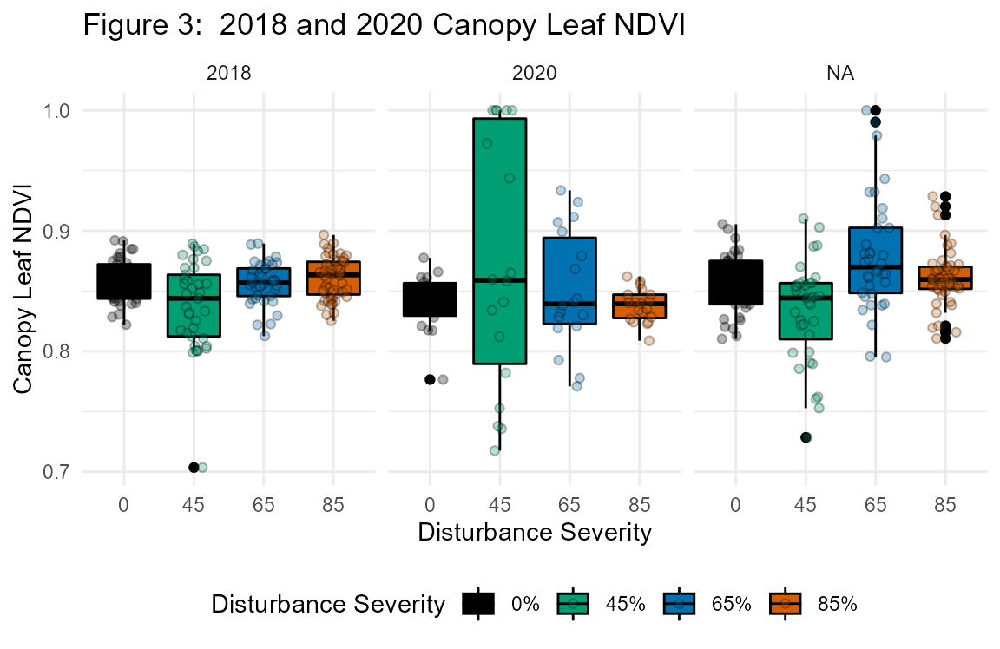

fortedata: Ecophysiology Data
Lisa Haber and Jeff Atkins
2020-12-10
fd_leaf_physiology_vignette.RmdEcophysiology Background and Introduction
Multiple types of ecophysiological data are collected annually during the growing season within FoRTE in order to capture the dynamic response of leaf functional traits to disturbance. We focus on two distinct strata within the forest: subcanopy and canopy. Within each stratum, we track changing leaf physiology year to year in a subset of surviving (i.e. ungirdled) trees through repeated measurements of leaves from the same branches on those trees each year. Within the canopy stratum, where access to light is generally high, leaves of surviving trees may adjust physiologically to loss of neighboring crown leaf area through increased access to other resources such as nitrogen and water (Nave et al., 2011). Within the subcanopy stratum, the ability of surviving trees to compensate for lost canopy leaf area becomes increasingly important to stabilizing C cycling as disturbance severity rises (Fahey et al., 2016; Stuart-Haëntjens et al., 2015). See [the FoRTE Proposal Narrative] (https://fortexperiment.github.io/fortedata/articles/fd_forte_proposal_vignette.html) for further details.
Leaf Physiology Functions
The fd_leaf_physiology() script within fortedata currently includes the following functions:
fd_leaf_spectrometry()returns a single dataset of vegetation indices derived from leaf-level spectrometry data collected via a CI-710 handheld spectrometer (Table S6). The package includes 7155 observations of spectral indices for three species each in eight subplots within the D replicate in 2018.fd_photosynthesis()returns a single dataset of leaf physiology variables, including photosynthesis, transpiration, etc, measured using a LI-6400 XT (LI-COR Biosciences; Lincoln, NE). The package includes 2215 observations from all 32 FoRTE subplots (across all four experimental replicates) in 2018.
Data Availability
fortedata is an evolving, open-science data package with data updated in near-real time. The current number of leaf physiology data observations available as of 2020-12-10 are detailed in Figure 1.

Ecophysiology Methods
Subcanopy Photosynthesis
Between July 11 – August 3, 2018; July 8 – 28, 2019; and July 9 - 24, 2020, we measured the light-saturated CO2 assimilation (Asat), stomatal conductance (gs), and ancillary variables of subcanopy leaves for each subplot. To capture inter- and intra-specific subplot physiological variability, we randomly selected three leaves 1 to 2 m above the forest floor in each of four 2 m x 2 m subcanopy vegetation survey sites for a total of 12 leaves per subplot. When leaves in the 1 to 2 m stratum were not present, the closest seedling or sapling leaf outside of the vegetation survey site was selected for measurement. Upon selection, we measured leaves using an LI-6400 XT portable photosynthesis system (LI-COR Inc., Licoln, NE) programmed to maintain the following chamber conditions: 2000 µmol/m2/s PAR, 400 ppm CO2, and 25 °C. In order to avoid excessive leaf stress during measurement, we attempted, through manipulation of chamber humidity, to maintain a leaf vapor pressure deficit below 2 kPa, but this was not always possible given atmospheric conditions in summer at our site. Leaves that failed to produce stable Asat after 5 minutes were discarded and a new leaf selected. In some plots, the majority of needleleaf trees sampled from vegetation survey locations exhibited leaf stress during sampling, so we collected additional samples and targeted broadleaf trees in order to hedge against insufficient sample size in these locations. Thus, the total number of leaves sampled across all 32 subplots was n = 443.

PhD student Lisa Haber collecting subcanopy leaf physiology measurements using a LI-6400 XT in 2018.
Canopy Photosynthesis
Using identical equipment and settings, we measured Asat, gs, and related variables for leaves from the canopy stratum of a single FoRTE replicate where a preexisting dirt road allowed aerial lift vehicle access. This data collection effort targeted three tree species: bigtooth aspen (Populus grandidentata), red maple (Acer rubrum), and Northern red oak (Quercus rubra). Tree crowns were sampled July 17 – 23, 2018, and twice the following year: June 11 – July 4, 2019, and July 30 – August 8, 2019. Sampling took place in accessible crowns of trees within or adjacent to experimental plots and proceeded as follows: 6 crowns per species x 3 species x 4 plots = 72 crowns. In our first sampled plot in 2018, we randomly chose five healthy, sun-adapted leaves from different terminal branches within each crown, but later reduced this number to three leaves per crown due to time and equipment constraints. Thus, the total number of leaves sampled in 2018 was n = 243, and in 2019 was n = 226. Accidental girdling of two trees in 2019 reduced the overall sample size to 70 crowns.

FoRTE team members Lisa Haber and Alley Barry collecting canopy leaf physiology measurements using the UMBS Zero Emissions Canopy Access Vehicle, or “Zeke.”
head(data.frame(fd_photosynthesis()))
## subplot_id replicate plot subplot timestamp obs ftime ebal photo
## 1 A01E A 1 E 2018-08-02 15:09:39 1 175.5 0 2.22
## 2 A01E A 1 E 2018-08-02 15:09:40 2 176.5 0 2.23
## 3 A01E A 1 E 2018-08-02 15:09:41 3 177.0 0 2.25
## 4 A01E A 1 E 2018-08-02 15:09:42 4 178.0 0 2.23
## 5 A01E A 1 E 2018-08-02 15:09:43 5 179.0 0 2.24
## 6 A01E A 1 E 2018-08-02 15:14:08 1 207.5 0 2.42
## cond ci trmmol vpdl ctleaf area blc_1 stmrat blcond tair tleaf tblk
## 1 0.0177 192 0.220 1.2 24.88 6 1.42 1 2.84 20.87 24.88 20.07
## 2 0.0175 189 0.217 1.2 24.88 6 1.42 1 2.84 20.87 24.88 20.06
## 3 0.0175 187 0.217 1.2 24.88 6 1.42 1 2.84 20.87 24.88 20.07
## 4 0.0176 190 0.219 1.2 24.88 6 1.42 1 2.84 20.87 24.88 20.07
## 5 0.0176 189 0.219 1.2 24.88 6 1.42 1 2.84 20.87 24.88 20.06
## 6 0.0222 218 0.275 1.2 24.88 6 1.42 1 2.84 20.88 24.88 20.06
## co2r co2s h2or h2os rh_r rh_s flow pari paro press csmch hsmch
## 1 402.79 400.02 19.601 19.860 78.02 79.04 500.6 1999 0 98.54 -5.18 0.0655
## 2 402.80 400.02 19.603 19.859 78.02 79.04 500.5 1999 0 98.54 -5.18 0.0655
## 3 402.81 400.01 19.604 19.859 78.03 79.04 500.5 1999 0 98.54 -5.18 0.0655
## 4 402.81 400.02 19.602 19.860 78.02 79.04 500.4 1999 0 98.54 -5.18 0.0655
## 5 402.80 400.01 19.601 19.858 78.01 79.04 500.3 1999 0 98.54 -5.18 0.0655
## 6 403.00 399.97 19.519 19.842 77.65 78.93 500.4 2000 0 98.56 -5.18 0.0655
## csmchsd hsmchsd crmchsd hrmchsd stablef blcslope blcoffst f_parin f_parout
## 1 0.0214 0.00919 0.0263 0.00643 1.0 -0.22 2.74 1 0
## 2 0.0214 0.00919 0.0263 0.00643 0.7 -0.22 2.74 1 0
## 3 0.0214 0.00919 0.0263 0.00643 0.7 -0.22 2.74 1 0
## 4 0.0214 0.00919 0.0263 0.00643 0.7 -0.22 2.74 1 0
## 5 0.0214 0.00919 0.0263 0.00643 1.0 -0.22 2.74 1 0
## 6 0.0214 0.00919 0.0263 0.00643 0.7 -0.22 2.74 1 0
## alphak status species sample comments
## 1 0.16 111115 ACPE 1 15:07:05 in NE #2784;
## 2 0.16 111115 ACPE 1 15:07:05 in NE #2784;
## 3 0.16 111115 ACPE 1 15:07:05 in NE #2784;
## 4 0.16 111115 ACPE 1 15:07:05 in NE #2784;
## 5 0.16 111115 ACPE 1 15:07:05 in NE #2784;
## 6 0.16 111115 ACPE 2 15:10:53 in NE;
Leaf spectrometry
We collected leaf reflectance spectra, used as a proxy for leaf biochemistry (including N content; Yang et al. 2017), with a CI-710 miniature leaf spectrometer (CID Biosciences, Camas, WA). We measured axial sides of leaves that met the minimum area requirement for the instrument (20 mm x 20 mm) in the range of visible to near infrared light (400-950 nm) immediately following physiological measurements and while still attached to trees. Because pine needles did not meet the minimum requirement for leaf area, only broadleaf specimens were available for measurement. Data output included waveform and individual wavelength spectral data, as well as a suite of derived vegetation indices including the normalized difference vegetation index (NDVI).

Lisa Haber using the CI-710 mini leaf spectrometer to gather FoRTE subcanopy leaf reflectance measurements in 2018.
fd_leaf_spectrometry()
## # A tibble: 7,221 x 9
## subplot_id replicate plot subplot date tree_id species index
## <chr> <chr> <int> <chr> <date> <chr> <chr> <chr>
## 1 D01E D 1 E 2018-07-22 CAN01 ACRU ARI1
## 2 D01E D 1 E 2018-07-22 CAN01 ACRU ARI2
## 3 D01E D 1 E 2018-07-22 CAN01 ACRU CRI1
## 4 D01E D 1 E 2018-07-22 CAN01 ACRU CRI2
## 5 D01E D 1 E 2018-07-22 CAN01 ACRU SIPI
## 6 D01E D 1 E 2018-07-22 CAN01 ACRU FRI
## 7 D01E D 1 E 2018-07-22 CAN01 ACRU CNDVI
## 8 D01E D 1 E 2018-07-22 CAN01 ACRU Ctr1
## 9 D01E D 1 E 2018-07-22 CAN01 ACRU Ctr2
## 10 D01E D 1 E 2018-07-22 CAN01 ACRU G
## # ... with 7,211 more rows, and 1 more variable: index_value <dbl>
Leaf morphology
We measured leaf mass per area (LMA) for all subcanopy and canopy leaf samples, which were removed from trees after physiological and reflectance measurements in 2018, 2019, and 2020. Samples were scanned with an LI-3100 leaf area meter (LI-COR Inc., Lincoln, NE) using the appropriate resolution (1.0 mm2 for broadleaves, 0.1 mm2 for needles), and subsequently dried at 60 °C for 48 hours and weighed to determine mass.